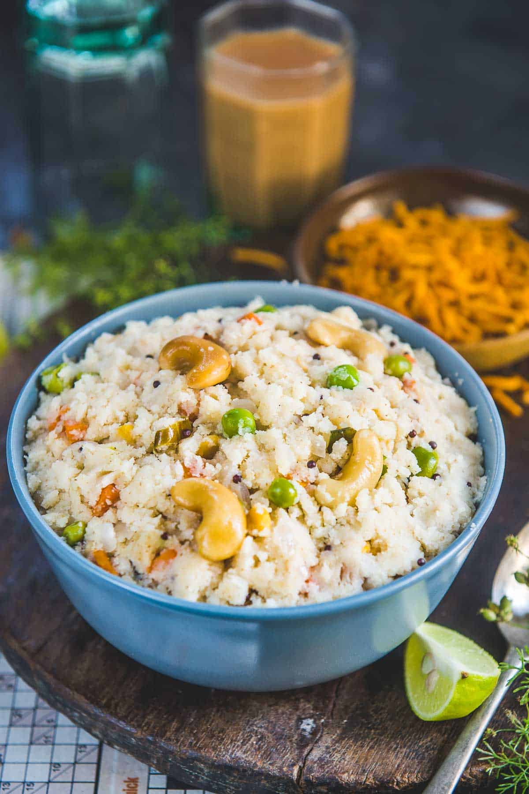

Upma

Description
Upma (Rava Upma) is a popular Indian breakfast dish made using fine semolina, onion, mild spices, and a few more ingredients. It is filling and nutritious and comes together in under 20 minutes. My recipe makes the best fluffy and non-sticky Rava Upma in a jiffy.
Ingredients
- Rava – Rava is also called semolina or sooji. It comes in multiple thicknesses but to make rava upma, always choose fine semolina or barik rava. It is also called upma rava or Bombay rava.
- Ghee – You will need some fat to roast the semolina. I highly recommend using ghee (clarified butter) as it lends a very nice flavor to the final dish. However, if you want to make a vegan version, use any plant-based oil instead.
- For Tempering – A tempering of mustard seeds, curry leaves, nuts, and lentils gives it a nice flavor and crunch.
Split and skinned black lentils (urad dal), Bengal gram (chana dal), and nuts like cashew nuts or peanuts add a lovely crunch to the otherwise soft upma and I highly recommend adding these to your recipe.
- Other Ingredients – I have also added onion, fresh ginger, and few veggies to my recipe. But you can feel free to skip these and make a plain and simple upma.
I generally add carrot, green beans, and peas which are traditionally added to it but feel free to add broccoli, mushroom, cauliflower, zucchini, etc.
- Cilantro and Lime – Do add chopped cilantro (coriander) at the end to make it even more flavorful. A drizzle of lime juice just before serving is highly recommended.
How to make
-
Heat 1 teaspoon ghee in a skillet over medium-low heat. You can use vegetable oil for a vegan version, however best upma is made in ghee.
Ghee heating in a pan.
Add 1 cup fine semolina to the skillet and fry until it turns very light brown and crunchy (2-3 minutes). Keep stirring continuously. Transfer the roasted rava to a plate and keep it aside.
Roasted semolina.
Note – Do not over roast the semolina otherwise upma will turn dark in color. Do not leave roasted semolina in the skillet otherwise, it will keep browning from the heat of the skillet.
Tip – You can roast the semolina in bulk and use it to make upma whenever you want to. It will save you some time.
-
Wipe the same skillet with a paper towel to get rid of any semolina sticking to it and add the remaining ghee to it. Heat it over medium-high heat.
Ghee heating in a pan.
Once the ghee is hot, add 1 teaspoon mustard seeds, 15-20 curry leaves, 1 teaspoon split, and skinned black lentils (urad dal), 1 teaspoon Bengal gram (chana dal), and 8-10 halved cashew nuts and fry until they turn slightly brown (1-2 minutes).
Mustard seeds, curry leaves, lentils and cashews added to the pan.
Add ½ cup chopped onion, 2 teaspoon chopped green chili peppers, and 1 teaspoon grated ginger and fry until onion turns pinkish in color (2-3 minutes). My husband doesn’t like ginger so I skip it sometimes.
Onion, chili and ginger added to the pan.
-
Add ¼ cup chopped carrots and ¼ cup green peas and cook for 3-4 minutes. You can add any vegetables of your choice like green beans, cauliflower, broccoli, etc.
Carrot and green peas added to the pan.
-
Add 2.5 cups of boiling hot water, 1 teaspoon sugar, salt to taste, and 1 tablespoon lime juice, and bring the mixture to a boil.
Boiling hot water, salt, sugar and lime juice added to the pan.
Reduce the heat to low and slowly add the roasted s
-
Cover the pan with a lid. Covering the pan is important as it will let the semolina soak the water and become soft.
Pan covered.
Cook for 5-8 minutes on low heat until semolina absorbs the water and is cooked completely. Remove the pan from heat and let it rest for 4-5 minutes. Fluff it with a fork and serve hot.
Ready upma.
Upma is ready!
Back to Home Page